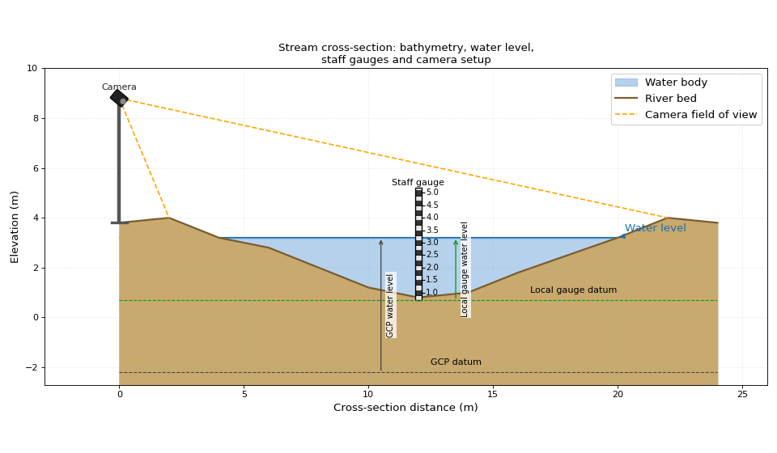
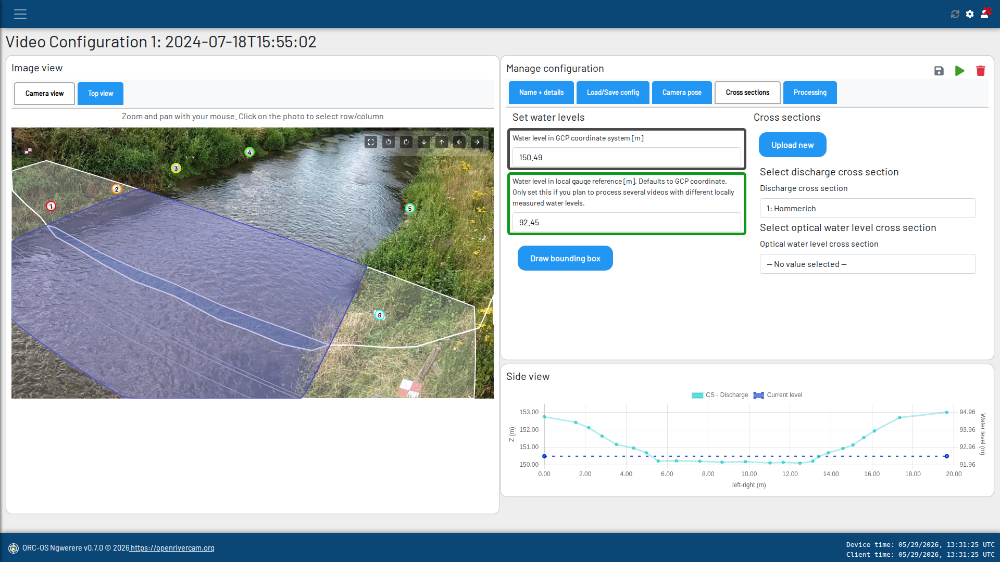
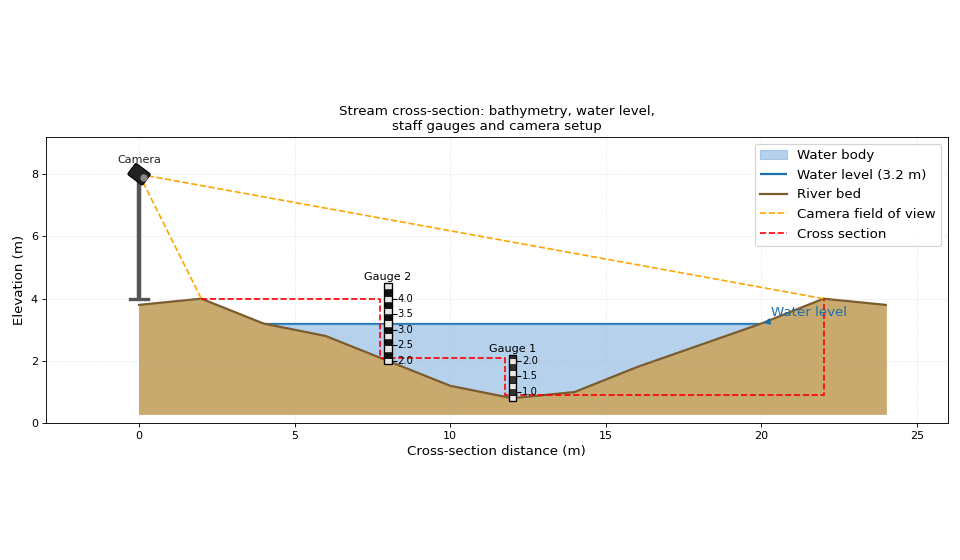
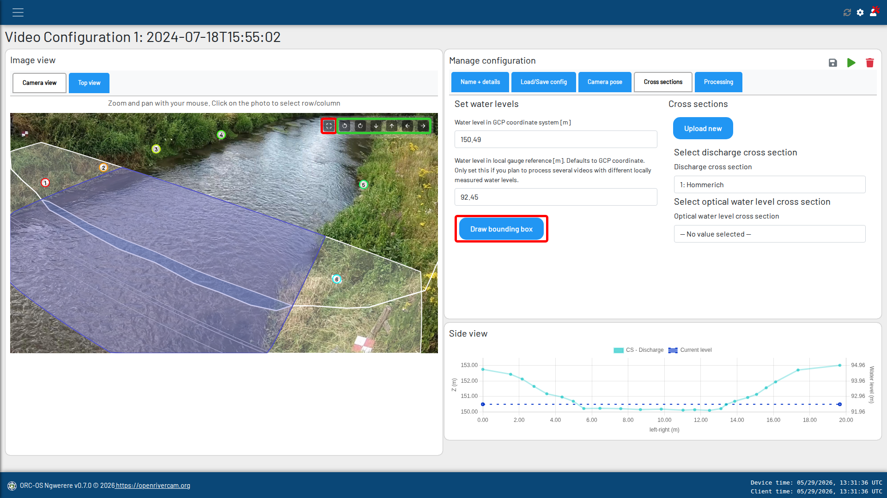
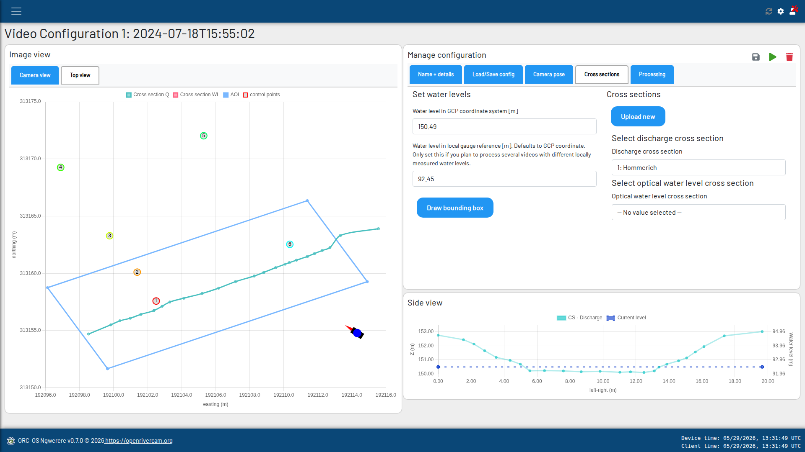

Water level and cross-sections#
Note
Water levels and cross-sections are needed to determine the wetted area of the channel, which in turn is needed to determine discharge. During your survey, you should measure the water level and cross-section in the same coordinate reference system as used for the camera pose and the ground control points so that the camera “understands” how it is aimed towards the water and cross section.
Entering water levels#
The water level is set in the cross-section tab. You here set the water level as it occurred during the survey. The water level is needed for two reasons:
most importantly: to notify ORC of possible offsets between the vertical datum used in your survey measurements and water levels as measured by a device. Remember that to process any video, the water level during that video is needed and any local device reporting this may be used. The vertical level must however be translated to the level used in your survey. You therefore must provide the water level in two different ways:
as measured during your survey in
Water level in GCP coordinate system [m]. This water level is indicated with the black arrow on the left-hand side of the staff gauge in the image shown below.as measured at the same moment, but through the water level measurement device in
Water level in local gauge reference [m].
This is illustrated with the green arrow on the right-hand side of the staff gauge in the image shown below. The image suggests a staff gauge is the local reference, but this can also be a pressure sensor or any other device that can be used to measure water level. The only requirement is that you can translate the water level as measured by this device to the water level in the GCP coordinate system. This is done by providing both water levels as described above. In the schematic example for instance, the datum of the GCPs is at -2.0 m. and the staff gauge datum is at its bottom, which is at -0.1 m. Here we have set the lowest point of the bathymetry of the cross-section at zero. This is certainly not a requirement, it can in fact be at any level, as long as the water levels are translated to the same vertical reference. A logical choice for a water level time series for instance, is a local datum commonly used in your region. In the Netherlands for instance, this is the NAP datum, which is reasonably close to mean sea level and often used for time series so that data from several locations along a channel can also be compared with each other. Your GCPs however, may have been measured with a GPS device, which has its own datum, e.g. the WGS84 ellipsoid.
(
Source code,png,hires.png,pdf)
Schematic representation of the two water levels that are needed to be entered in the cross-section tab. Black arrow - Water level measured in GCP coordinate system. Green arrow - Water level measured in local gauge reference.#
If you will only optically measure water level then choose a logical reference, and keep it the same for both values. For instance, choose the bottom of the cross section or a level on a fixed point, such as a concrete pier. This will allow you to easily update the cross-section if you wish to do so, without creating offsets in the discharge - water level relationship. Simply ensure that when you resurvey the cross-section, you make sure that the vertical level at the chosen reference point is the same as before. This will ensure that the water level in the GCP coordinate system is the same as before, and that you can also update the water level in the GCP coordinate system to the same reference as before.
the second reason is a little more obvious: to visually check if your measurements seem right. After selecting the water level and a cross-section you will be able to visually see the wetted cross-sectional surface as well as the planar wetted surface in the image view on the left-side of the Video configuration view.
{kind=link}
{kind=link}
Fill in the two water levels in the cross-section tab as shown below. The color coding is the same as in the figure above.

Water level settings in the cross-section tab. Grey rectangle - Water level measured in GCP coordinate system. Green rectangle - Water level measured in local gauge reference.#
Uploading and selecting cross sections#
Important
It is important to understand what is meant by a “cross section”. A cross section in OpenRiverCam terms, is a set
of coordinates measured in the same coordinate system as used for all other measurements, that describes the
bottom of the channel from one bank to the other. There is often confusion about the vertical (Z) coordinate. This
may with certain instrumentation (e.g. echo sounders)be measured as the depth of the channel, meaning that the
lowest bottom coordinate appears
as the highest value. This is not correct because your cross-section dataset should instead describe the
bottom coordinate. If for instance the X, Y, Z coordinate of your camera is measured as 0, 0, 0, then the
bottom coordinates of your cross-section will all have a lower Z value than zero with the lowest point in the
channel having the lowest Z value. Before using a cross-section you must therefore make sure its
coordinates share the same vertical reference as all other measurements i.e. control points and the water level.
The cross-section is needed to determine the wetted area of the channel, which is needed to determine discharge. You can upload one or more cross-sections and use these for multiple video configurations. For instance: you may decide to resurvey after the camera has moved or its direction has been changed. If GCPs remain in the same coordinate reference system and the cross-section has not changed, you may use an existing cross-section.
You can also decide to upload multiple cross-sections for the same video configuration, for instance if you have surveyed multiple cross-sections during the survey, e.g. one that describes the cross-sectional wetted perimeter and one that describes the shape along a clear channel form, which works better for optical estimation of water levels. This may (ideally) for instance be a vertical structure such as a concrete embankment, a bridge pier or a staff gauge, close enough to the camera to be clearly visible. See our tip below for how to make a “cross section” that uses points along known vertical objects like placed staff gauges.
To upload a cross-section, go to the Cross sections tab and click on the “Upload cross-section” button. This will
open a file dialog. Select the file containing the cross-section coordinates. The file must be a CSV file obeying
to the strict rules shown in this note.
You may also decide to “Straighten cross section”. If you enable this option before selecting “Upload”, the points.
Tip
How about measuring water levels optically from staff gauges? Optical water level estimation can be done by defining a “cross section” which is merely a smart horizontal and vertical interconnection of points on known vertical structures. For instance you may have installed a camera on a mast looking at two staff gauges or (better) white colored plates. You can measure the X-, Y-coordinates of the lowest staff gauge, measure the Z-coordinate of the lowest point and highest point of the staff gauge. Then measure the X-, Y-coordinates of the second staff gauge and also the lowest (Z) point and highest point. Then in Excel create a set of cross section points that connects the two with each other. For the other side (not used in practice) you may then create some arbitrary points towards the farthest bank. The 2-D schematic shown in the figure below demonstrates this idea. Just make sure that both (or all if you have more than 2) staff gauges have some overlap in the vertical, and that you finish the cross section by adding some arbitrary far-shore points so that you can select the nearest bank to detect the water level on.
With this approach, you should consider that the “size of the element” over which the water level is measured (see this subsection), should be relatively small, in the order of the width of your staff gauge, change the 3 meter default value to e.g. 0.3.
(Source code, png, hires.png, pdf)
{kind=link}
{kind=link}

Schematic representation of a “cross section” that can be used to detect water levels, which is not a real cross section, but more a connection of known vertical orientation points.#
Selecting an area of interest#
Once water levels and cross sections are selected, you may draw an area of interest in the camera view. This area of interest will be rectangular in reality, but will appear in the camera’s perspective. You can select the area of interest in 4 simple clicks after which you may do some refinements:
First click on either one of the “Draw bounding box” buttons (see red rectangles in the figure below).
Then click on the left bank of the river in the camera view, at the location where you want the area of interest to start. Click on a point along the cross-section where you think the water may get to when the water level is high. This is likely further left than the water edge during survey conditions.
Then click on the opposite side of your first point, on the right bank of the river, also further right than the water edge so that the area of interest also covers the river during high flows.
Finally move your mouse cursor up- or downstream to grow the area of interest. You will automatically get a bounding box that has a bit of space up as well as downstream. Try to aim for about 2 meters up- and downstream space. Click once you are satisfied.
This gives you a first version of the bounding box. You can click on “Top view” to check the rectangle from above and compare it against the cross section. You may then rotate and move it with the buttons shown within the green rectangle in the image below.

Bounding box selection buttons#
Tip
The left bank is the bank that you see on your left side, while looking in downstream direction. The right bank is the bank that you see on your right side, while looking in downstream direction.
The top view shows the bounding box in a top view perspective. This may help you understand if the box is large enough, encompasses the entire cross-section and if it is centrered around the cross-section. If this is not the case, do not hesitate to move or rotate the area of interest, or make a completely new selection.

Top view of the bounding box, here you can see we could have rotated the bounding box slightly to better encompass the cross section. This is not strictly necessary but may improve the coverage of your velocity estimates over the cross-section.#